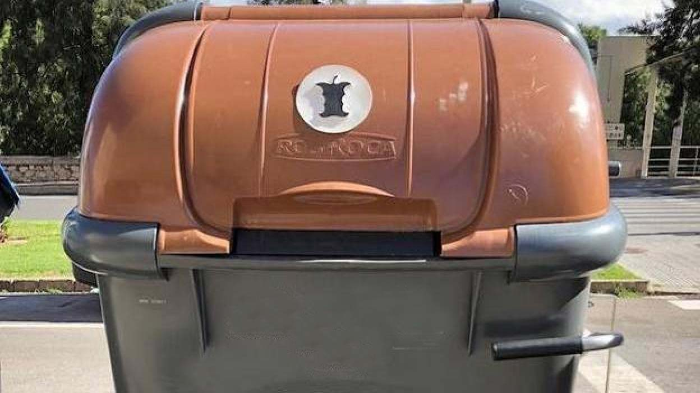

Una preocupación generalizada entre la población es lograr reducir el impacto ambiental y cumplir su compromiso social respetando el medio ambiente y potenciar la sostenibilidad en su día a día.
¿Qué puede hacer usted para conseguirlo?
Desde el ayuntamiento de Ripollet, detallamos una lista de acciones que tanto empresas como individuos pueden llevar a cabo para lograrlo:
Empresas
-
ASG (Ambiental, Social y Gobernanza)
¿Qué es?
El ASG se refiere a los criterios que se utilizan para medir el desempeño de una empresa en términos de sostenibilidad
Importancia del ASG ¿Qué permite?
Permite evaluar como sus operaciones afectan al medio ambiente
Identificar y controlar riesgos relacionados con la sostenibilidad
Asegurar continuidad del negocio, mejorar en reputación y atraer futuro talento
Beneficios de adoptar los criterios ASG
Innovación
Mejora de reputación
Atracción de inversores
Reducción de costos
¿Desea saber más?
Haga click aquí para acceder a la página de contacto
-
Diseño y producción sostenibles
(Economia Circular, Ecodiseño y Reciclaje)
-
Certificaciones sostenibles
Ciudadanos
ODS (Objetivos de Desarrollo Sostenible)
- Reserva un sitio en casa para el reciclaje.
- Separa bien los envases de la basura orgánica.
- Recicla cada material en el lugar que corresponde.
- Productos especiales en lugares especiales.
- Reutiliza las bolsas de plástico o uso bolsas de tela.
- Hazte con una compostera.
- Nada de aceite por el fregadero.
Transporte Público en Ripollet
Noticias Recomendadas

El impacto del contenedor orgánico en la esperanza de vida de los gatos domesticos

Emprenedoria sostenible: El camino verde hacia el éxito empresarial
Los expertos señalan a Francia, ¿existe realmente?